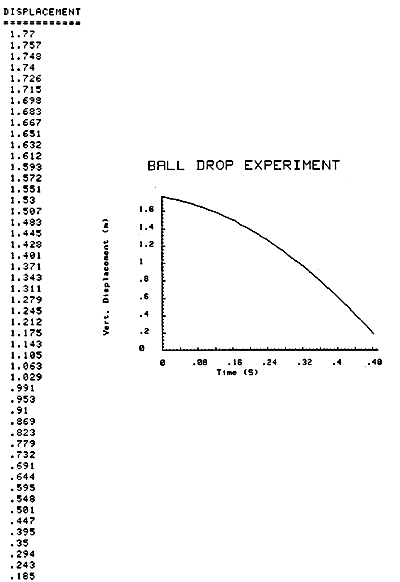
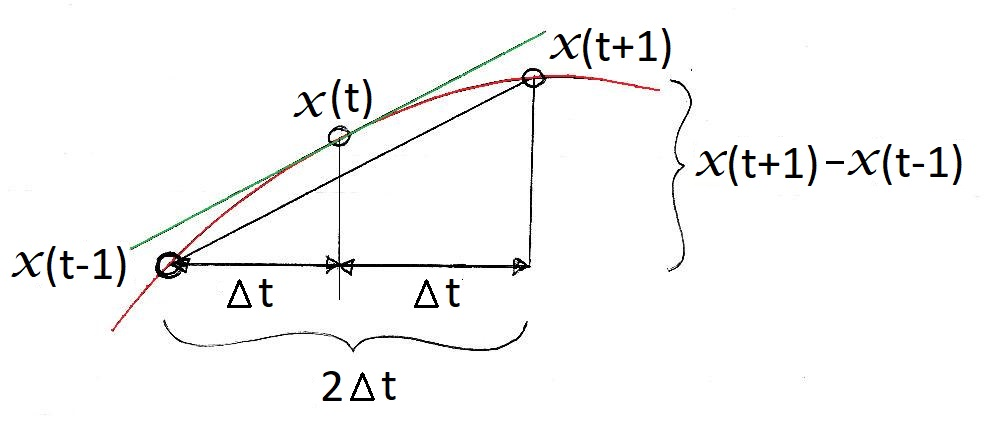
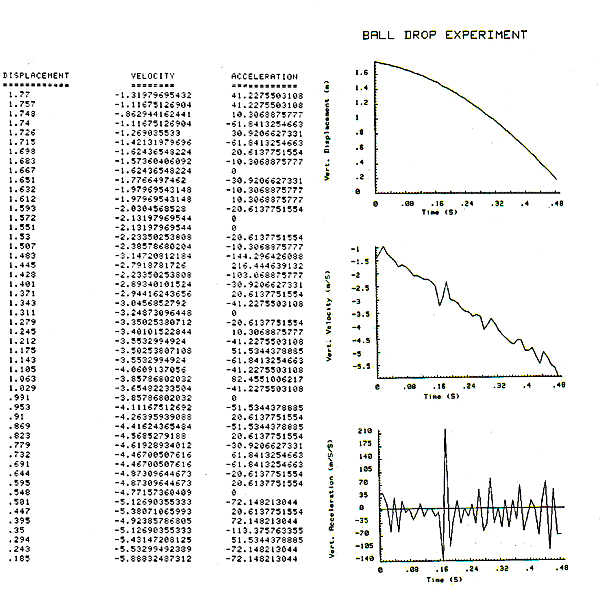
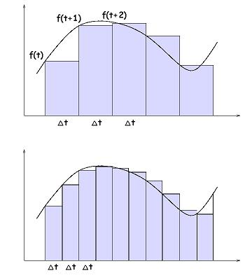
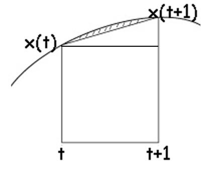

Differentiation
As mentioned in the (Quantitative Lab), other kinematic variables such as velocity and acceleration can be determined from the position and time information collected during motion capture. The purpose of this lab is to show how displacement data from motion capture can be processed to yield velocity and acceleration data.

The table to the left shows the output from a film analysis of a ball falling after being dropped from a height 1.8 meters. The film camera was set at 100 frames per second but was found to be actually filming at a rate of 101 frames per second.
The first column shows the digitized vertical positions of the ball in each frame. These positions are considered to be the vertical displacement from the ground. Since these data represent discrete values of a continuously changing position of the falling ball, we cannot use calculus to differentiate the displacement to yield velocity or acceleration. However, the computer can use a method of finite differences to yield values for velocity and acceleration. This method is shown below.
Central Finite Differences:
Since the computer only knows the position of the ball at discrete times, it must estimate the slope to get a derivative. In the diagram below, let's assume the red line to be the true, continuous trajectory of an object. The black circles are the digitized positions of the object at three subsequent times (frames). If we wish to know the velocity at time (t), we would ideally want to calculate the tangent to the red line at that instant (see the green line). However, the computer can only perform calculations on the discrete position data so the best estimate of the tangent at time t would be average slope between t-1 and t+1. We will let deltat t represent the time between each frame.
The velocity would be the rise divided by the run. Using our ball drop experiment data and calculating the velocity for the fourth frame, we would use the displacement from the third frame (t-1) and the displacement from the fifth frame (t+1) and a deltat t of 0.0099 (101 frames per second) and perform the calculation below.
This process would be repeated to yield the velocities for each frame and the entire procedure would be performed on the velocity data to yield accelerations. If we plot the resulting velocity and acceleration calculations, we get the following:

The figure to the left shows the original displacement data in the first column. A computer program, using the central finite differences method above, printed out velocities and accelerations in the second and third columns, respectively. These data are then plotted in the respective graphs.
We know from projectile motion that velocity should be a linearly decreasing function with a slope of -9.81 and the acceleration should be a constant -9.81 m/s2. When we look at the graphs, we see the negative tend is appearent in velocity but the line is not straight. The acceleration data has huge fluctuations and is not even close to the constant -9.81. Does this mean that central finite differences is a poor method for differentiation?
The reason for the derivative errors is the fact that the displacement data have small high frequency noise (errors) that are not very noticable in the displacement plot. The process of differentiation magifies these high frequency errors which is why the errors are much more obvious in the second derivative than in the first derivative.
The solution to better derivatives is not to find a better differentiation method, but to filter out the high frequency noise. The method for filtering will be discussed in the "Frequency Domain Processing" lecture.
Integration
Sometimes we have acceleration data from an accelerometer and we would need to integrate the data once to get velocity and twice to get displacement. We also did a form of integration in the Impulse/Momentum Lab when we counted squares to get impulse from a force-time curve of the vertical jump. Calculating an integral is the same as finding the area under the curve.
Rectangle Rule:

The simplest way to estimate the area is to multiply the data sample by the time interval (delta t). That is to calculate the base times the height of a rectangle and add up the areas. The shaded blue area is the estimate of the area under the curve using this rectangle method. Notice that the methof under-estimates the area when the function is increasing and over-estimates the area when the function is decreasing.
The accuracy of the method is increased by increasing the sampling rate which decreases delta t.
Trapezoidal Rule:

The accuracy of the rectangle can be improved by adding a triangle on top of the rectangle to yield a trapezoid.